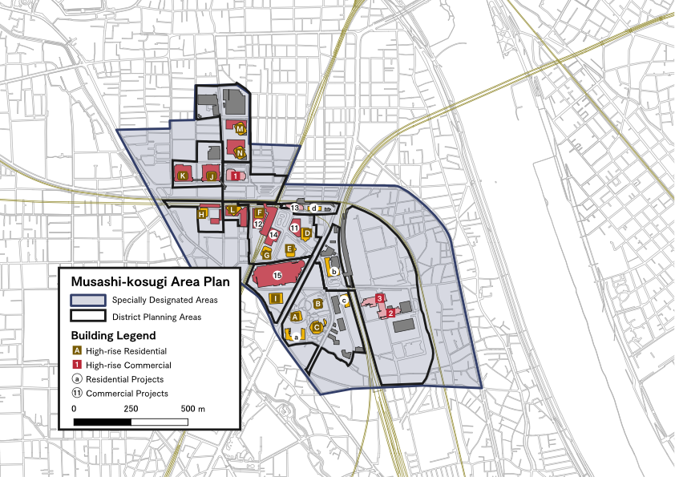

Cumulative Environmental Impact Research
Overview
The Musashi-Kosugi district located in suburban Tokyo has seen rapid construction of high-rise residential buildings, resulting in cumulative impacts of multiple development causing issues including exceeding infrastructure capacity and right to light impacts. The environmental impact assessment (EIA) focusing on individual developments have the potential to underestimate impacts for clustered buildings. This report assessed the environmental impacts for the following issues, all of which are ongrowing issues in the current Musashi-Kosugi area.
- access to sunlight
- overpopulation of public education facilities
- congestion of public transport
- impact to the skyline

Key Results
Difference in Individual and Cumulative Impacts
The research has discovered the individual EIAs have failed to acknowledge the cumulative impact of multiple developments.
The impact on shadows were the most clearly illustrated - as shown below.

Other interesting results included the change in the perception of the transforming skyline, with a new high-rise development being described as a ‘symbolic structure’ in early stages, but later changed into ‘subtle change’ that fits within the given surroundings with multiple high-rises.
Engagement from EIAs
The engagement from individual development-based EIAs have a spectrum of consideration toward cumulative impacts, depending on the subject. There were issues that were not considered at all (i.e. impact on public transport), issues that had only been considered on an individual basis (right to light, change in skyline) to issues with mitigating measures conducted by the EIA (impact of wind). Not all issues have been considered in the EIA, and some are only considered in an individual scale.
Publication
Reported on the Reports of the City Planning Institute of Japan (available in Japanese only) and can be accessible from J-Stage
Cite as:
Japanese
木村 颯希、真鍋 陸太郎、村山 顕人(2019), 「超高層建築物の群化による複合的環境影響に関する研究 ー武蔵小杉駅周辺市街地を対象にー」, 「日本都市計画学会 都市計画報告集」 No. 18, May 2019, pp.87-91
English
Kimura, S., Manabe, R., and Murayama, A. (2019) ‘A Study on the Cumulative Environmental Impacts of the Clustered High- Rise Buildings: A Case Study of Musashi-Kosugi, Kawasaki’, Reports of the City Planning Institute of Japan, 18 (May 2019), pp.87-91